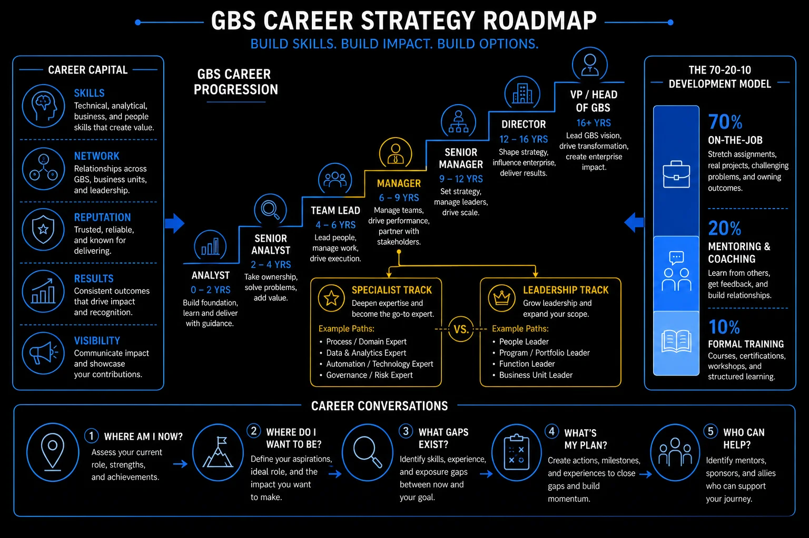

Pillar 5 · Cluster 2
Career strategy for GBS professionals
The GBS career path is not linear. Understanding T-shaped skills, internal mobility, and the pivot from operations to projects gives you control over your trajectory instead of waiting for it to happen.
Sound familiar?
Topic 01 · Skill Architecture
T-shaped skills — the GBS career advantage
Deep expertise in one area plus broad understanding across adjacent domains — the T-shape is the GBS career advantage. The model is in THE FIX.
Depth gets you noticed.
Breadth gets you promoted.
 K
KKlaudia’s automation spike made her name. Then a promotion interview asks about the end-to-end process.
Upstream intake, downstream reporting, the stakeholder view — she has lived in one column of it.
The role goes to someone who can hold the whole picture.
"My depth opened the door. The room asked for width."
She feels alerted, not defeated — the gap has a name.
You deepen the spike forever and skip the horizontal bar that leadership roles sit on.
The T has two strokes — and careers need both.
She keeps the spike and rotates through adjacent desks for six months. The next interview holds no blind spots.
T-shaped skills in depth
Deep expertise in one area plus broad understanding across adjacent domains. That is the T-shape that makes you valuable beyond your current role.
In GBS, the T-shape separates someone who runs a process from someone who improves, transforms, and leads processes.
- →Vertical depth — deep expertise in one domain (accounts payable, HR operations, financial reporting) gives you credibility
- →Horizontal breadth — knowledge across process improvement, technology, stakeholder management, and project execution gives you career options
Profile
- Deep expertise in one domain
- Highly efficient within defined scope
- Career risk: role becomes automated or consolidated
- Limited internal mobility options
Profile
- Deep expertise plus broad cross-functional knowledge
- Can contribute across process, technology, and stakeholder domains
- Career resilient: multiple pivot options when landscape shifts
- High demand for transformation and leadership roles
Skills matrix — breadth and depth for career growth
Sketch your T: spike depth, bar width. Name the two adjacent areas you know least.
The shape is right. Now find the next seat.

GBS career strategy roadmap: build skills, build impact, build options
Topic 02 · Career Navigation
Internal mobility — navigating transfers and promotions
The best GBS opportunities are often internal — new functions, geographies, projects. Internal moves have their own rules. The model is in THE FIX.
Your next role
might be two floors up.
 R
RRavi scrolls external job boards nightly. Meanwhile, an internal posting for a reporting role sits unread.
A colleague applies. Same qualifications, one difference: her manager knew, her sponsor called ahead, her application was expected.
She gets it in two weeks.
"Internal moves are relationship moves with paperwork attached."
He feels schooled — and starts working the inside game.
You treat internal postings like external ones and apply cold into your own company.
Internal mobility runs on three rails.
Ravi joins one cross-team initiative and tells his manager his direction. The next posting comes to him first.
Internal mobility in depth
The best career opportunities in GBS are often internal — new functions, new geographies, new projects. But internal moves require strategy, not just availability.
- Build your reputation before you need it — people hire internally based on track record and relationships, not just applications
- Tell your manager your ambitions — they cannot advocate for you if they do not know where you want to go
- Target specific roles, not vague growth — "I want to move into process excellence" is actionable; "I want to grow" is not
- Volunteer for cross-functional projects — visibility in a new domain creates the evidence base for a lateral move
- Know the internal posting cycle — most organizations have structured windows for internal moves; timing matters
Career map — lateral, vertical, and diagonal moves
Tell your manager one honest sentence about your direction. Ask what internal path fits it.
One internal move outruns all others. Operations to projects.
Topic 03 · Career Pivots
From operations to projects — making the pivot
The ops-to-projects pivot is the most common GBS career jump — and project exposure is the audition, not the reward. The model is in THE FIX.
BAU keeps you employed.
Projects make you known.
Priya took the migration SME role reluctantly — extra work on top of BAU.
Twelve months later: she knows the PM toolkit, the steering committee knows her name, and a project coordinator role opens.
Her BAU-only peers were never in the room.
"The migration was the interview all along."
She feels vindicated for every stretched week.
You wait to be made a project person. Project people are made by raising their hand once.
The pivot is a staircase, not a jump.
Her project portfolio does what no appraisal could: it makes the pivot look inevitable.
Ops to projects in depth — the full pivot path
The transition from running processes to leading projects is the most common — and most challenging — career pivot in GBS. It requires a fundamental shift in how you define success.
The two roles define success differently — and the mindset shift is harder than the skills gap.
- →Operations — success is consistency: hitting SLAs, maintaining quality, managing volume
- →Projects — success is change: delivering new capabilities, hitting milestones, managing stakeholders through uncertainty
- →The skills overlap (discipline, communication, attention to detail) — but project work is temporary, ambiguous, and politically exposed in ways that BAU operations are not
- Lead a process improvement initiative — this is a mini-project within your operational role
- Get certified — PMP, PRINCE2, or Agile Scrum Master signals commitment to the project management discipline
- Volunteer as a subject matter expert on a transformation program — this gives you project exposure without leaving operations
- Document your operational experience as project-relevant skills — stakeholder management, risk awareness, SLA discipline all transfer directly
- Seek a hybrid role first — process excellence or continuous improvement sits between operations and projects
Volunteer for one project task this month — UAT counts. Log it as the audition it is.
And beyond GBS? The launchpad works in that direction too.
Topic 04 · Long-term Planning
GBS to corporate — career exit strategies
GBS experience translates into corporate roles — if you map it into corporate language and build the bridge before you need it. The model is in THE FIX.
GBS is not the destination.
Unless you want it to be.
 P
PPeter eyes a group-level operations role. His CV says: SLA management, transition leadership, process ownership.
The hiring manager’s language: operating model design, change delivery, cost management.
Same skills. Different dictionary. He translates every bullet.
"I ran the same work they need. I just described it in GBS dialect."
He feels portable for the first time.
You describe your experience in GBS vocabulary and let corporate readers undervalue it.
The exit is a translation exercise plus a bridge.
His stakeholder network vouches for him in corporate language. The move stops being a leap and becomes a step.
GBS to corporate in depth — exit strategies
GBS is not a career dead-end. It is a launchpad — if you build the right skills and relationships. Many corporate functions value GBS experience precisely because it combines operational depth with cross-functional exposure.
- Process ownership transfers to operational excellence, internal consulting, and business transformation roles
- Stakeholder management across geographies transfers to global program management and strategic planning
- Data analytics and automation experience transfers to digital transformation and IT strategy
- Financial operations experience transfers to FP&A, controllership, and internal audit
- People management across cultures transfers to HR business partnership and organizational development
- The biggest exit mistake is waiting too long. GBS experience has diminishing returns after 8-10 years if you have not diversified. Plan your next move by year 5.
- Corporate hiring managers value GBS professionals who can articulate their impact in business terms — cost savings delivered, processes transformed, teams built — not just tenure and scope.
Rewrite three CV bullets in corporate language. Test them on a non-GBS colleague.
Career mapped. Cluster 3: make sure the right people know.
If you're feeling stuck, ask yourself three questions.
- →Have you actually told anyone? Communicate your career ambitions to your manager and HR partner — most HR systems let you log career preferences. Nobody advocates for someone who never asked.
- →Do you know what your manager really thinks of you — beyond the formal PPD feedback? Ask directly. If they don't see you as ready for the next step, at least you know and can pivot: lateral move, different department, different organization entirely.
- →Is there no open role despite leadership knowing your ambition? Don't wait. Propose a project or ask for project involvement — it accelerates your learning and increases your visibility at the same time.
Reference
Glossary
Full glossary at the GBS Insider Club Field Guide.
- SSON Analytics — GBS career progression survey, 2025
- McKinsey — Building workforce skills at scale, 2024
- LinkedIn — Workplace Learning Report, 2025
- PMI — Pulse of the Profession, 2025
Test Yourself
Scenario check — would you make the right call?
No trivia. Every question is a situation you will actually face. Pick your answer, get the reasoning.
Knowing the frameworks is the entry ticket. Applying them — visibly, at your actual job — is what gets you promoted.
The GBS Insider Club Career Playbooks turn this theory into a guided 90-day program for your role: self-assessment, practical exercises, templates, and Julian's unfiltered practitioner playbook.
Explore the Career Playbooks → Back to Career and Performance